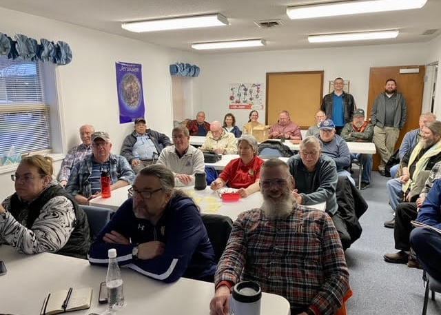

Welcome to MARC
The Michiana Amateur Radio Club brings together amateur radio operators from throughout the Michiana area.
Whether you're a longtime Amateur Extra, just earned your first license, or are interested in learning what amateur radio is all about, we invite you to learn more about our club and the amateur radio community in Michiana.
📅 Club Meetings
Grace Brethren Church
1715 E. Day Road
Mishawaka, IN 46545
MARC holds regular meetings featuring amateur radio programs, club activities and opportunities to meet other local operators.
📻 Wednesday Night Net
Every Wednesday at 7:00 PM Eastern
K9DEW Repeater
147.330 MHz
+0.600 MHz offset
131.8 Hz tone
Licensed amateur radio operators are welcome to check in.
📡 Club Activities
MARC members participate in Field Day, portable operations, public service, educational programs, foxhunts, club outings and other amateur radio activities throughout the year.

Radio • Community • Friendship
Amateur radio is about more than making contacts. MARC provides opportunities to learn, operate, experiment, volunteer and spend time with other people interested in radio.
Contact the Michiana Amateur Radio Club
Questions about MARC, an upcoming meeting, or amateur radio in the Michiana area?
Email us at w9ab@w9ab.org